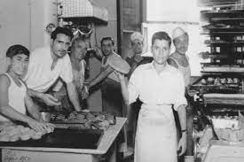
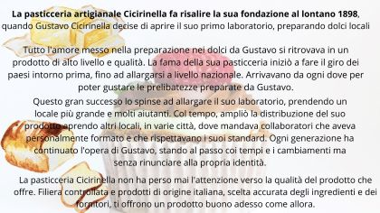
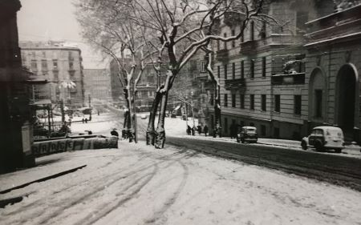

PORTFOLIO DI FRANCESCA MUCILLI
Content creator e web developer
Benvenuto nel mio sito portfolio. Il sito è stato creato in html e css con alcune delle cose imparate durante i corsi fatti, come il carosello o la creazione di più pagine responsive. In questo portfolio potrai visualizzare alcuni dei lavori che ho svolto come copywriter, recensore, blogger e youtuber. Nella sezione "Content creator" sono presenti alcuni banner esempio per eventi e pagine di blog; inoltre, tramite il link puoi visualizzare alcuni miei articoli presenti sul blog Nella sezione "Foto copertine" sono presenti alcuni banner copertina usati per il mio canale Youtube di ricette e consigli per allergici e non. Nel portfolio, invece, sono presenti alcune immagini e link di siti creati da me, attualmente caricati su Github.
In questa pagina sono presenti alcuni articoli che ho scritto negli anni come copywriter e blogger
Alcuni esempi di articoli e storytelling
Storytelling esempio di una pasticceria storica
PASTICCERIA ARTIGIANALE CICIRINELLA
Storytelling della pasticceria su banner creato con Canva
Esempio vendita promo per stampe "Roma innevata">
QUANTO SEI BELLA ROMA INNEVATA Tipologia: stampa su carta Colore: bianco e nero Dimensioni:13,5x9,5 cm Periodo: Roma anni '60 Disponibilità: limitata* Servizi aggiuntivi**: acquistabile con passpartout o con cornice Atmosfera bianco-grigiastra di un pomeriggio invernale e nevoso, in una stradina di Roma, trafficata, come si vede dalle scie delle macchine, che stanno correndo via per andare a fare gli ultimi acquisti prima di tornare a casa al calduccio, davanti al camino e ad un bel fuoco scoppiettante. Lo scricchiolio della neve sotto le scarpe, mentre si fa attenzione a camminare sulla strada innevata ed evitare di fare un capitombolo e far diventare la discesa della strada, uno scivolo improvvisato. Il freddo pungente sul viso, il ricordo di un passeggiata, l'odore delle caldarroste portate dal vento. Una foto può tramettere tante emozioni, fa scattare un ricordo oppure colpire soltanto la bellezza dei chiari scuro. È un complemento d'arredo unico per arredare case, ma anche studi e uffici. Acquista questa stampa unica nel suo genere a soli €20 **Servizi aggiuntivi: foto + passpartout: 30€ ; stampa+ cornice: 40€; stampa + passpartotu+ cornice: 65€ *La disponibilità è limitata perchè si tratta di una foto unica e non replicabile.
Esempio articolo per e-commerce: Crema al limoncello
La crema al limoncello racchiude in sé una doppia: i migliori limoni siciliani si fondono con la vellutata bontà della panna. L'unione del liquore al limoncello, preparato con i limoni siciliani maturati al sole e di una cremosa panna hanno creato un crema al limoncello deliziosa, alcolica e perfetta da bere per accompagnare frutta e gelato, servita liscia. Un prodotto tutto italiano, nato dalla sapienza e dall'esperienza (..omissis..), che produce limoncello da anni. Panna e limoni di origine italiana, miscelati e dosati sapientemente per creare un'unione speciale. Al gusto piacevole del classico limoncello è stata aggiunta un deliziosa panna che rende ancora più corposo il sapore della crema. La conservi in frigorifero e la puoi servire come guarnizione di gelato o frutta oppure a fine pasto, come amaro. Puoi usare la crema di limoncello per preparare dei dolci o dei cupcake aromatizzati. Puoi anche usare la crema di limoncello per preparare un delizioso gelato o da versare sopra delle fragole. Per un tocco in più, puoi aggiungerlo anche nella crema pasticciera, da usare per preparare semifreddi o dolci al cucchiaio. In un bicchiere a boule versa un cramble di biscotti, aggiungi qualche cucchiaio di crema pasticciera a cui avrai aggiunto un paio di cucchiai di crema al limoncello e guarnisci con lamponi e fragole. Contiene latte, lattosio, proteine del latte e soia. Ha una percentuale alcolica del 17%, ovvero sono presenti 17 ml di alcool ogni 100 ml di prodotto.. Getta la bottiglia da 500 ml nella raccolta del vetro, secondo le disposizioni del tuo comune sulla raccolta differenziata. (::omissis..)
Esempio articolo per e-commerce: Primosale
Il primosale è un formaggio fresco fatto con latte proveniente da allevamenti piemontesi.Un formaggio che puoi mangiare da solo, in accompagnamento con verdure oppure che puoi usare per preparare sfiziosi e deliziosi panini. Non contiene conservanti ed è ricco di calcio e proteine. Una porzione da 100 grammi, fornisce il 54% del fabbisogno di calcio che serve ad un uomo adulto. (...omissis). Una lunga storia di esperienza e dedizione, per offrirti un prodotto buono e di qualità, stando attenti al benessere degli animali. Puoi preparare un antipasto a base di primosale, con un po' di miele sopra ed una spolverata di noci o pistacchi. Puoi metterlo sopra una focaccia bianca, insieme a pomodorini pachino e rucola oppure in un panino, insieme a prosciutto crotto/crudo, misticanza e sottaceti. Buono per un pranzo veloce o da servire durante una cena a base di bruschette o crostini. Da mangiare insieme a verdure ma ottimo anche da aggiungere a tocchetti nelle zuppe o nelle insalate miste. Può essere usato in tanti piatti che vengono consumati in fretta o nel breve periodo. È un alimento a base di latte e lattosio, confezionato in atmosfera protettiva perché tende a perdere tanta umidità. Conservalo in frigorifero a +4°C. (...omissis)
Altri articoli in pdf
Leggi lo storytelling di un ristoranteLeggi lo storytelling della pasticceria Cicirinella